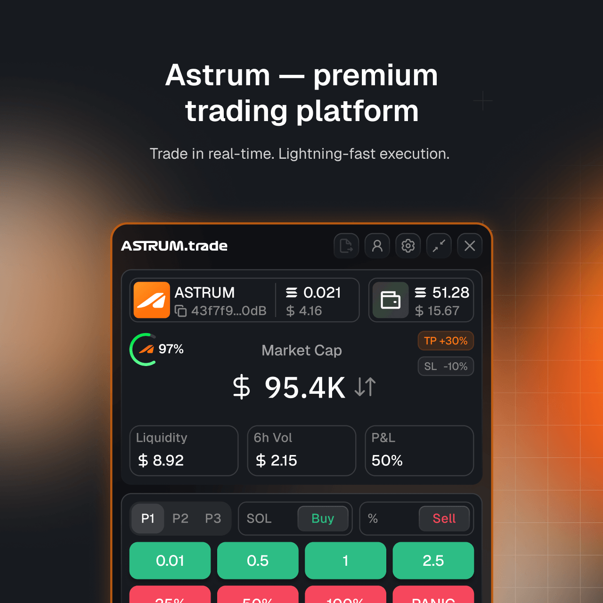
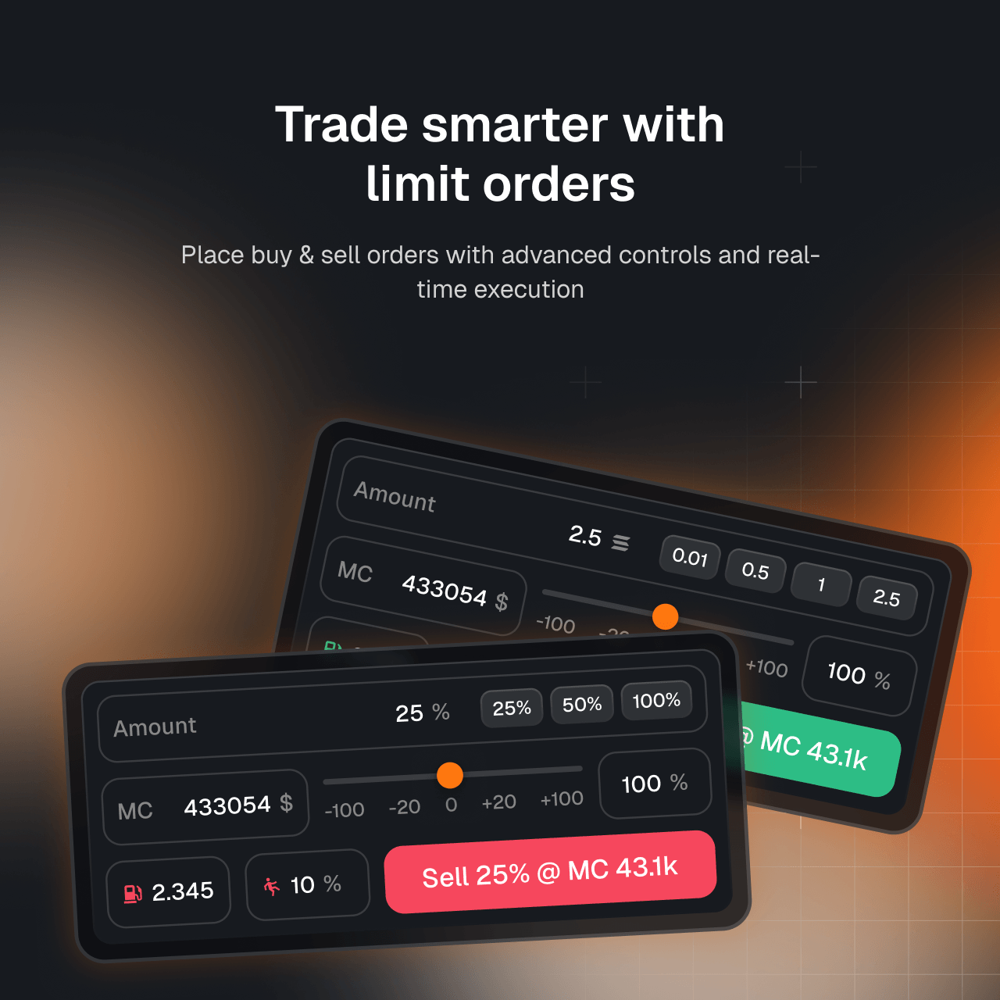
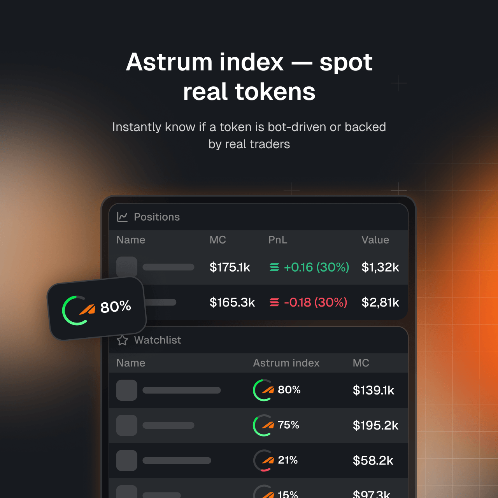
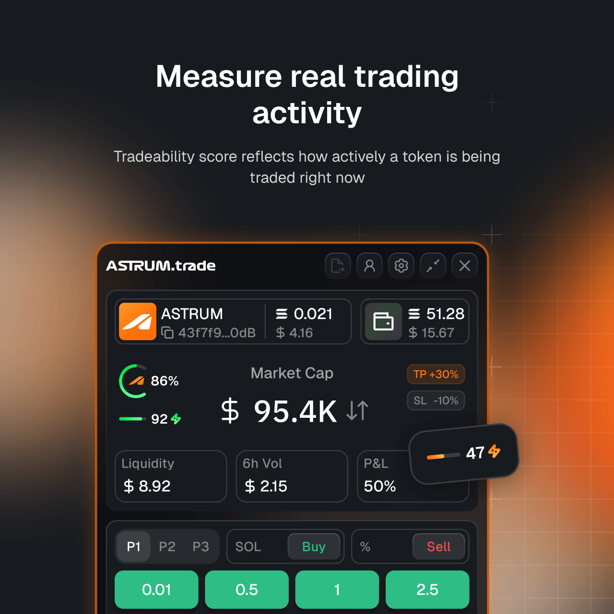
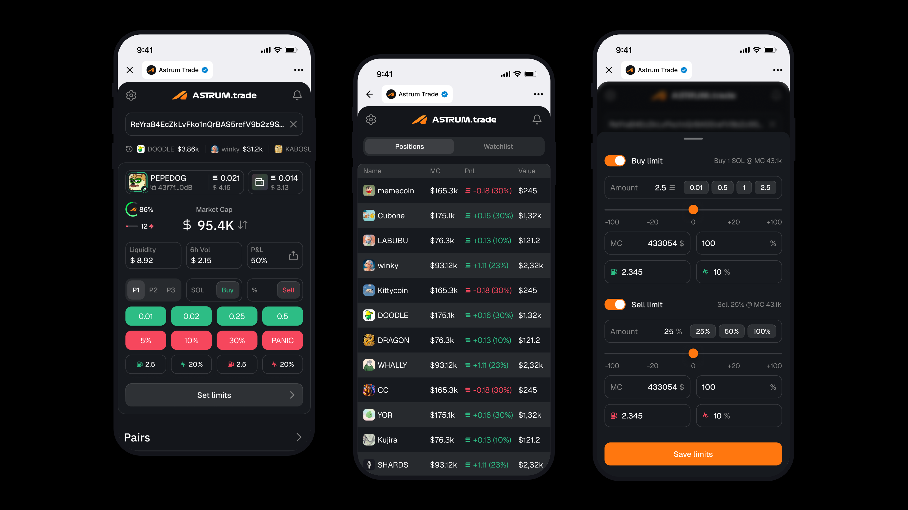

A compact trading workspace for meme-coin traders. I designed the Chrome extension from the ground up, bringing fast trade actions and a broad set of tools into a focused interface.




Astrum Trade was a new product for traders working across meme-coin trading sites. The Chrome extension brought key trading actions and analysis into a compact workspace. On supported sites, an injected entry point opened the extension on the relevant coin, while keeping the trading site visible.
As the sole designer, I shaped the product from its information architecture and user flows through detailed interface design, component system, and post-development design reviews. I worked directly with the founder and developers, and also created the company landing page and social media visuals.
Structured the extension and designed its end-to-end flows and final interfaces, balancing a compact footprint with convenient access to a wide feature set.
Quick buy and sell, limit orders, pairs and trades, P&L view and sharing, impulse trading, multiple wallets, profit and loss limits, and a multi-pool selector.
Created a component-based design system from scratch, then reviewed the implemented interface with developers.
Designed the company landing page and visual materials for social media.
The central design challenge was fitting many trading tools into a small extension without making them hard to find. I organized functionality into separate sections and prioritized frequent actions and speed, while preserving the depth traders needed.
A small group of traders tested the product. We used their feedback to make iterative improvements, and the testers were positive about the experience. The extension was then released in the Chrome Web Store.
At the time of the store snapshot, Astrum Trade showed 2,000 users.

I also started designing a Telegram mini-app intended to mirror the extension's functionality for traders who preferred working in Telegram.